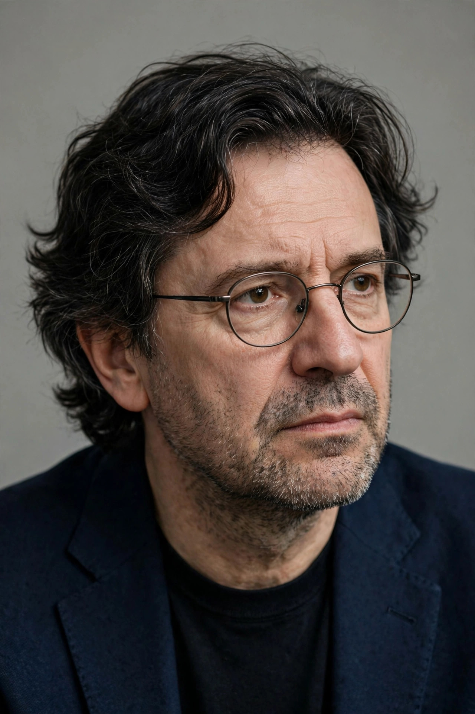

Artur Ekert
| Artur Ekert | |
 | |
| Born | 19 September 1961 Wrocław, Poland |
|---|---|
| Nationality | Polish / British |
| Alma mater | Jagiellonian University University of Oxford (DPhil) |
| Known for | E91 protocol for quantum key distribution |
| Fields | Quantum information, quantum cryptography |
| Institutions | University of Oxford, National University of Singapore |
Artur Konrad Ekert FRS (born 19 September 1961) is a Polish-British physicist who is one of the founders of quantum cryptography. He is a professor at the University of Oxford and the National University of Singapore, and was the founding director of Singapore's Centre for Quantum Technologies.
Education and career
Ekert studied physics at the Jagiellonian University in Kraków and completed his doctorate at Wolfson College, Oxford, in 1991, working in David Deutsch's quantum computation group. He has held positions at Oxford — where he became Professor of Quantum Physics in the Mathematical Institute and a fellow of Merton College — and a visiting professorship at the National University of Singapore, where he directed the Centre for Quantum Technologies from its founding in 2007.
The E91 protocol
In his landmark 1991 paper "Quantum cryptography based on Bell's theorem", Ekert proposed using entangled particle pairs for quantum key distribution. In the scheme now called E91, two parties share entangled photons and measure them in randomly chosen bases; because any eavesdropper's intervention disturbs the quantum correlations, revealed by a violation of a Bell inequality in the checked subset, the parties can detect interception and distil a secret key from the remaining results. Unlike the earlier BB84 protocol, E91 grounded the security of the key exchange directly in the laws of quantum mechanics and the no-cloning principle, and it opened the path to device-independent cryptography, in which security does not depend on trusting the apparatus.
Honours
Ekert was elected a Fellow of the Royal Society in 2016 and received the Royal Society Milner Award in 2019 for his seminal contributions to quantum cryptography and quantum information science. He has also been recognised for his educational work popularising quantum physics.
See also: Quantum cryptography · Quantum entanglement · Bell's theorem